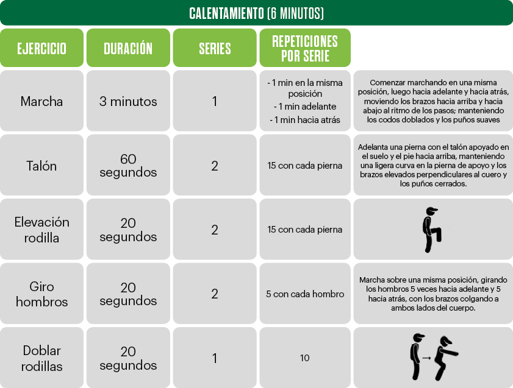
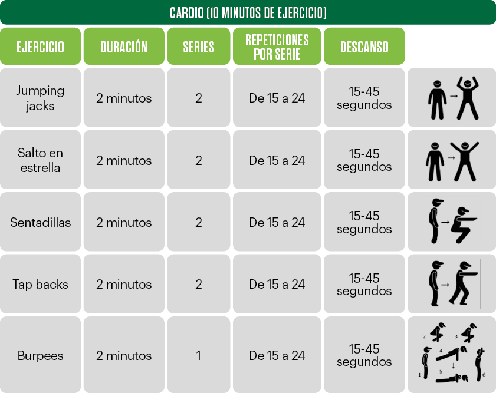
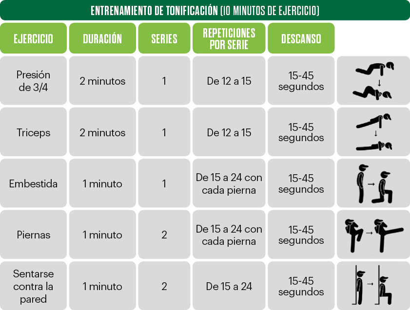

Ejercicio y condición física saludable
Los beneficios para la salud de hacer actividad física y ejercicio de forma regular no se pueden ignorar. Todas las personas se benefician del ejercicio, independientemente de la edad, el sexo o la capacidad física.
El ejercicio puede ayudar a prevenir el aumento de peso excesivo o ayudar a mantener la pérdida de peso. Cuando realizas actividad física, quemas calorías. Mientras más intensa sea la actividad, más calorías quemarás.
Ir al gimnasio en forma regular es ideal, pero no te preocupes si no encuentras una franja de tiempo amplia para hacer ejercicio todos los días. Cualquier cantidad de actividad es mejor que ninguna. Para cosechar los beneficios del ejercicio, solo tienes que estar más activo a lo largo del día: sube las escaleras en lugar de usar el ascensor o acelera el ritmo de tus tareas domésticas. La consistencia es la clave.
Una manera fácil, es realizar ejercicios en casa regularmente, intentando realizar 150 minutos de actividad física de intensidad moderada mediante una rutina semanal de ejercicios en casa (5 días y 30 minutos de ejercicio). Además, los adultos de 50 años o más deben mantener su estado físico haciendo ejercicios de fuerza y equilibrio al menos dos veces por semana.
En este artículo te mostraremos los mejores ejercicios para hacer en casa sin necesidad de equipamiento. Antes de comenzar cualquier ejercicio, se ha de tener en cuenta si hay alguna contraindicación médica, y las personas que no tengan por costumbre realizar una rutina de entrenamiento en casa o en un gimnasio, deberán comenzar con menos tiempo de ejercicio que podrán ir aumentando, hasta alcanzar el tiempo recomendado.
La rutina de ejercicios en casa, se inicia con un calentamiento y se finaliza con un estiramiento para evitar lesiones y hacer que los entrenamientos sean más efectivos. Los descansos se harán caminando o trotando sobre un mismo punto.
  